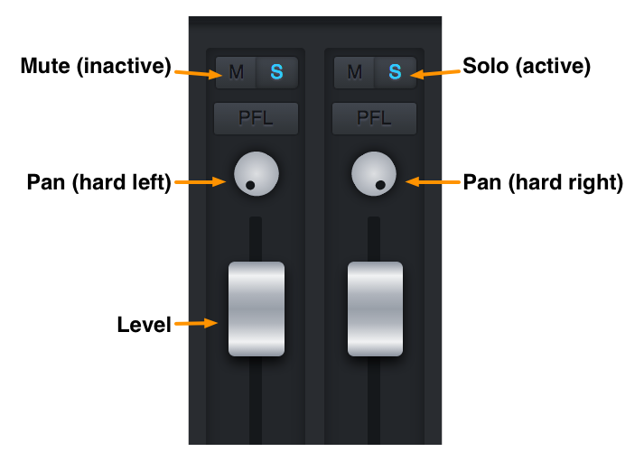
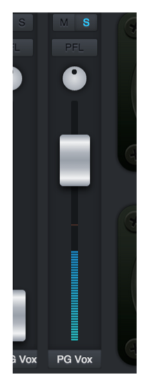

This is a quick guide to using the PWYM custom mix interface. Here's a guide to the mix interface for "Sledgehammer."
[external link withheld] [link withheld]
When you first pull up the mixer, here's what you see:
The two channels on the left are the complete original mixdown of "Sledgehammer," soloed and panned hard left and right respectively. The rest of the channels contain the individual stems, all with their levels set to zero. From left to right, the stems are:
- Shak: the sampled shakuhachi (bamboo flute) that plays at the top of
the song. - Drums: the drum kit and tambourine.
- Bass: the fretless electric bass guitar.
- Guitars: the two electric guitars.
- Piano: the digital synth piano sound.
- Prophet: the Prophet-5 analog synth that sounds like an organ.
- Horns: the trumpet, trombone and tenor sax.
- BG Vox: the female backing vocalists.
- PG BG Vox: Peter's overdubbed backing vocals.
- PG Vox: Peter's lead vocal.
Each channel has a mute, solo, pan and level control.

To begin exploring the multitrack, un-solo the mixdown channels on the left and start bringing up different stems, alone or in combination. You can discover some interesting things just by listening to the stems in isolation. For example, try soloing Peter's lead vocal:

Whenever Peter is singing, you can hear the rest of the instruments faintly in the background. This is a phenomenon called bleed, and it happens when undesired sound leaks into a mic. The best way to prevent bleed is to record instruments and singers in acoustic isolation. However, Peter added his vocals after the rest of the tracks were complete, so why is there bleed in his mic?
Usually singers use headphones to prevent bleed. However, some singers don't like headphones; they find them unnatural, and prefer to hear their voice out in the room. Peter recorded his vocals while monitoring from speakers, and naturally, some of the sound from the speakers made it into his mic. The Beatles were also famous for always monitoring from speakers.
If you solo the guitar, you'll notice that there is no bleed whatsoever. Even if the guitarists were playing live with the rest of the band, their sound is perfectly isolated. Either their amps were in separate rooms totally sealed off from the rest of the studio, or the guitars were just plugged straight into the soundboard. If the signal never passes through the air, there's no difficulty in keeping it isolated.
Once you've finished your mix, how do you share it with the world? The answer is in the little code at the end of the web page address.
Each time you move a control, you'll notice the code changing automatically. When you're happy with your mix, all you have to do is copy the web page address and paste it into a forum post, an email or wherever you'd like. Then anyone can click the link, and the mix interface will load with your settings all dialed in. Pretty cool. Happy mixing!